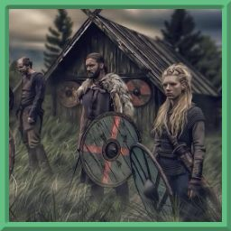

Каждый новый день приносит Северянам новую проблему. На вершинах гор пища, вода и кров — редкие ресурсы. Одна ошибка может привести к гибели всего племени, в то время как героический поступок одного может обеспечить выживание всей группы.
Эти факторы определяют, выживет ли северянин в суровых условиях, не полагаясь на магические предметы, деньги или другие элементы, которые могут склонить чашу весов в одну или другую сторону. Северяне всегда не прочь заполучить подобное преимущество, но они всегда помнят, что полученное можно потерять в любой момент. Северянин, который слишком полагается на них, может стать самодовольным, а на севере это может привести к катастрофе.
Северяне не испытывают жалости к взрослым, не способным позаботиться о себе, хотя больного или травмированного лечат и выхаживают, чтобы у всех были равные шансы.
Из-за их любви к риску племена Северян страдают от хронической нехватки опыта, предлагаемого долгосрочными лидерами. Они больше надеются на врожденную мудрость своего лидера, поскольку редко могут рассчитывать на мудрость, пришедшую с годами. Их лидеры завоевывают свою власть силой и удерживают её до появления более сильного конкурента.
Практически все северяне, живя в суровом климате, обладают довольно крепким телосложением. Будучи достаточно высокими и крупными, они сильно выделяются в толпе. Обладая преимущественно светло-голубыми или карими глазами, главной особенностью Северян являются бороды. Борода — это достоинство любого северянина, её размер, внешний вид и пышность традиционно отмечаются.
Северяне разделяют несколько общих особенностей.
| Особенность | Описание |
|---|---|
| Увеличение характеристик | Значение вашего Телосложения увеличится на 1, а значение любой характеристики на ваш выбор увеличится на 1. |
| Борющиеся за жизнь | Вы получаете владение навыком Выживание. |
| Возраст | Северяне становятся взрослыми в районе 16 лет и доживают до 55 лет. |
| Размер | В среднем Северяне вырастают от 160 до 180 см. Ваш размер — Средний. |
| Скорость | Ваша базовая скорость — 30 футов. |
| Приспособленные к холоду | Вы адаптированы к холодным климатическим условиям и имеете сопротивление урону холодом. |
| Черта | Вы получаете одну черту на ваш выбор. |
| Свирепые воины | Вы настолько свирепы, что когда совершаете рукопашную атаку оружием, можете добавить к броску урона кость к4, количество раз, равное вашему модификатору силы. |
{kind=link}